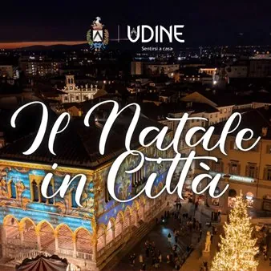

lun 7 dic · dalle 17:00
La magia del Natale - Torne Cisile concerto
7 dicembre 17 Oratorio della Purità La Villotta friulana e la figura di Elda Lenarduzzi Bulligan dai suoi canti, brani della tradizione friulana, dalla sua poetica, nuova musica friulana. Impronte Anomale - Italian Variable Contemporary Ensemble Quartetto d'Archi basso (viola…
 Indicazioni
Indicazioni
- Costi e prenotazioni
- Costo non indicato · Prenotazione non indicata
- Programma
- Programma da verificare. Apri la fonte ufficiale per orari e possibili aggiornamenti.
- In caso di maltempo
- Nessuna indicazione specifica pubblicata.
- Note
- Acquisito automaticamente dalla fonte.
L’EVENTO
Descrizione completa
La Villotta friulana e la figura di Elda Lenarduzzi Bulligan dai suoi canti, brani della tradizione friulana, dalla sua poetica, nuova musica friulana. Impronte Anomale - Italian Variable Contemporary Ensemble
Quartetto d'Archi basso
(viola: Lucia Zazzaro; violoncello: Nicola Segatta; violoncello e voce: Mariano Bulligan; contrabbasso: Carlo La Manna) Impronte Anomale è un ensemble musicale innovativo che nasce dall’incontro creativo
di tre musicisti, compositori e amici: Mariano Bulligan, Carlo La Manna e Nicola Segatta, qui affiancati dalla viola di Lucia Zazzaro (violista dell'Orchestra del Teatro La Fenice di Venezia).
L’essenza del progetto risiede nella peculiarità di un ensemble variabile in cui ogni musicista esegue e porta in scena le proprie composizioni, creando un dialogo sonoro unico e originale. La versatilità di Impronte Anomale risiede non solo nel repertorio, ma
anche nella capacità di modificare l’ensemble arricchendo così l’esperienza musicale con nuove sfumature e interazioni timbriche e sonore. Mariano Bulligan (violoncellista, cantante, sound-artist), Carlo La Manna (contrabbassista, attore, compositore) e Nicola Segatta (violoncellista, compositore, liutaio, scrittore) condividono una visione fatta di intrecci tra le loro diverse influenze e background artistici. La musica proposta spazia dalla contemporaneità con accenti minimalisti, fino a sonorità ispirate alla tradizione popolare. Composizioni originali scritte appositamente per l’ensemble, arrangiamenti di loro composizioni per il teatro, il cinema, la danza e brani nati per niente, per una necessità dei tre musicisti. Ulteriore preziosità viene aggiunta dai brani originali nati dalle poesie di Elda Lenarduzzi Bulligan, Pier Paolo Pasolini e Carlo Michelstaedter. L'importanza di valorizzare e restituire alla comunità regionale la figura e l'opera di Elda Lenarduzzi Bulligan (1922/2022), donna, autrice e compositrice friulana la cui produzione poetica e musicale ha generato numerosi brani entrati nel patrimonio della tradizione musicale friulana e della villotta.
Informazioni e prenotazioni: 0432 582525 dal lunedì al venerdì dalle 11:00 alle 16:00
IL PROGRAMMA
Programma e orari
Appuntamenti raccolti dalle fonti elencate. Dove manca un orario, non è ancora disponibile in questa scheda.
Programma pubblicato
- Dal 2026-12-07 al 2026-12-07
INFORMAZIONI UTILI
Prima di partire
- Controllare la fonte prima di partire.
ORGANIZZAZIONE